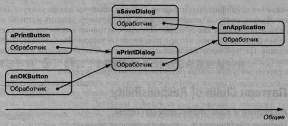
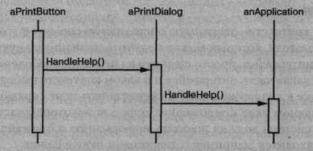
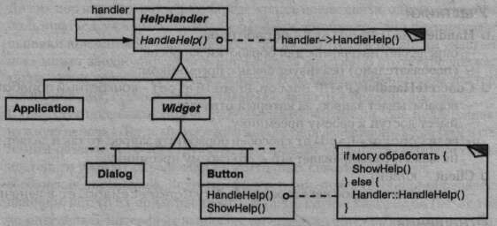
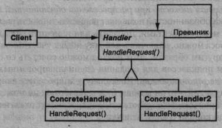
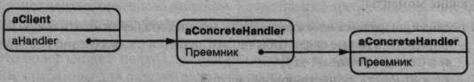

Паттерн Chain of Responsibility
Название и классификация паттерна
Цепочка обязанностей - паттерн поведения объектов.
Назначение
Позволяет избежать привязки отправителя запроса к его получателю, давая шанс обработать запрос нескольким объектам. Связывает объекты-получатели в цепочку и передает запрос вдоль этой цепочки, пока его не обработают.
Мотивация
Рассмотрим контекстно-зависимую оперативную справку в графическом интерфейсе пользователя, который может получить дополнительную информацию по любой части интерфейса, просто щелкнув на ней мышью. Содержание справки зависит от того, какая часть интерфейса и в каком контексте выбрана. Например, справка по кнопке в диалоговом окне может отличаться от справки по аналогичной кнопке в главном окне приложения. Если для некоторой части интерфейса справки нет, то система должна показать информацию о ближайшем контексте, в котором она находится, например о диалоговом окне в целом.
Поэтому естественно было бы организовать справочную информацию от более конкретных разделов к более общим. Кроме того, ясно, что запрос на получение справки обрабатывается одним из нескольких объектов пользовательского интерфейса, каким именно - зависит от контекста и имеющейся в наличии информации.
Проблема в том, что объект, инициирующий запрос (например, кнопка), не располагает информацией о том, какой объект в конечном итоге предоставит справку. Нам необходим какой-то способ отделить кнопку-инициатор запроса от объектов, владеющих справочной информацией. Как этого добиться, показывает паттерн цепочка обязанностей.
Идея заключается в том, чтобы разорвать связь между отправителями и получателями, дав возможность обработать запрос нескольким объектам. Запрос перемещается по цепочке объектов, пока один из них не обработает его.
Первый объект в цепочке получает запрос и либо обрабатывает его сам, либо направляет следующему кандидату в цепочке, который ведет себя точно так же. У объекта, отправившего запрос, отсутствует информация об обработчике. Мы говорим, что у запроса есть анонимный получатель (implicit receiver).
Предположим, что пользователь запрашивает справку по кнопке Print (печать). Она находится в диалоговом окне Pr intDialog, содержащем информацию об объекте приложения, которому принадлежит (см. предыдущую диаграмму объектов). На представленной диаграмме взаимодействий показано, как запрос на получение справки перемещается по цепочке.
В данном случае ни кнопка aPrintButton, ни окно aPrintDialog не обрабатывают запрос, он достигает объекта anApplication, который может его обработать или игнорировать. У клиента, инициировавшего запрос, нет прямой ссылки на объект, который его в конце концов выполнит.
Чтобы отправить запрос по цепочке и гарантировать анонимность получателя, все объекты в цепочке имеют единый интерфейс для обработки запросов и для доступа к своему преемнику (следующему объекту в цепочке). Например, в системе оперативной справки можно было бы определить класс HelpHandler (предок классов всех объектов-кандидатов или подмешиваемый класс (mixin class)) с операцией HandleHelp. Тогда классы, которые будут обрабатывать запрос, смогут его передать своему родителю.
Для обработки запросов на получение справки классы Button, Dialog и Application пользуются операциями HelpHandler. По умолчанию операция HandleHelp просто перенаправляет запрос своему преемнику. В подклассах эта операция замещается, так что при благоприятных обстоятельствах может выдаваться справочная информация. В противном случае запрос отправляется дальше посредством реализации по умолчанию.
Применимость
И спользуйте цепочку обязанностей, когда:
- есть более одного объекта, способного обработать запрос, причем настоящий обработчик заранее неизвестен и должен быть найден автоматически;
- вы хотите отправить запрос одному из нескольких объектов, не указывая явно, какому именно;
- набор объектов, способных обработать запрос, должен задаваться динамически.
Структура
Типичная структура объектов.
Участники
Handler (HelpHandler) — обработчик:
- определяет интерфейс для обработки запросов;
- (необязательно) реализует связь с преемником;
ConcreteHandler (PrintButton, PrintDialog) — конкретный обработчик:
- обрабатывает запрос, за который отвечает;
- имеет доступ к своему преемнику;
- если ConcreteHandler способен обработать запрос, то так и делает, если не может, то направляет его - его своему преемнику;
Client — клиент:
- отправляет запрос некоторому объекту ConcreteHandler в цепочке.
Отношения
Когда клиент инициирует запрос, он продвигается по цепочке, пока некоторый объект ConcreteHandler не возьмет на себя ответственность за его обработку.
Результаты
Паттерн цепочка обязанностей имеет следующие достоинства и недостатки:
-
ослабление связанности. Этот паттерн освобождает объект от необходимости «знать», кто конкретно обработает его запрос. Отправителю и получателю ничего неизвестно друг о друге, а включенному в цепочку объекту - о структуре цепочки.
Таким образом, цепочка обязанностей помогает упростить взаимосвязи между объектами. Вместо того чтобы хранить ссылки на все объекты, которые могут стать получателями запроса, объект должен располагать информацией лишь о своем ближайшем преемнике; - дополнительная гибкость при распределении обязанностей между объектами. Цепочка обязанностей позволяет повысить гибкость распределения обязанностей между объектами. Добавить или изменить обязанности по обработке запроса можно, включив в цепочку новых участников или изменив ее каким-то другим образом. Этот подход можно сочетать со статическим порождением подклассов для создания специализированных обработчиков;
- получение не гарантировано. Поскольку у запроса нет явного получателя, то нет и гарантий, что он вообще будет обработан: он может достичь конца цепочки и пропасть. Необработанным запрос может оказаться и в случае неправильной конфигурации цепочки.
Реализация
При рассмотрении цепочки обязанностей следует обратить внимание на следующие моменты:
-
реализация цепочки преемников. Есть два способа реализовать такую цепочку:
- определить новые связи (обычно это делается в классе Handler, но можно и в ConcreteHandler);
- использовать существующие связи.
-
соединение преемников. Если готовых ссылок, пригодных для определения цепочки, нет, то их придется ввести. В таком случае класс Handler не только определяет интерфейс запросов, но еще и хранит ссылку на преемника.Следовательно у обработчика появляется возможность определить реализацию операции HandleRequest по умолчанию - перенаправление запроса преемнику (если таковой существует). Если подкласс ConcreteHandler не заинтересован в запросе, то ему и не надо замещать эту операцию, поскольку по умолчанию запрос как раз и отправляется дальше. Вот пример базового класса HelpHandler, в котором хранится указатель на преемника:
class HelpHandler { public: HelpHandler(HelpHandler* s) : _successor(s) { } virtual void HandleHelp(); private: HelpHandler* _successor; }; void HelpHandler::HandleHelp () { if (_successor) { _successor->HandleHelp(); } }
-
представление запросов. Представлять запросы можно по-разному. В простейшей форме, например в случае класса HandleHelp, запрос жестко кодируется как вызов некоторой операции. Это удобно и безопасно, но переадресовывать тогда можно только фиксированный набор запросов, определенных в классе Handler.
Альтернатива – использовать одну функцию-обработчик, которой передается код запроса (скажем, целое число или строка). Так можно поддержать заранее неизвестное число запросов. Единственное требование состоит в том, что отправитель и получатель должны договориться о способе кодирования запроса.
Это более гибкий подход, но при реализации нужно использовать условные операторы для раздачи запросов по их коду. Кроме того, не существует безопасного с точки зрения типов способа передачи параметров, поэтому упаковывать и распаковывать их приходится вручную. Очевидно, что это не так безопасно, как прямой вызов операции.
Чтобы решить проблему передачи параметров, допустимо использовать отдельные объекты-запросы, в которых инкапсулированы параметры запроса. Класс Request может представлять некоторые запросы явно, а их новые типы описываются в подклассах. Подкласс может определить другие параметры. Обработчик должен иметь информацию о типе запроса (какой именно подкласс Request используется), чтобы разобрать эти параметры.
Для идентификации запроса в классе Request можно определить функцию доступа, которая возвращает идентификатор класса. Вместо этого получатель мог бы воспользоваться информацией о типе, доступной во время выполнения, если язык программирования поддерживает такую возможность. Приведем пример функции диспетчеризации, в которой используются объекты для идентификации запросов. Операция GetKind, указанная в базовом классе Request, определяет вид запроса:void Handler::HandleRequest (Request* theRequest) { switch (theRequest->GetKind()) { case Help: // привести аргумент к походящему типу HandleHelp((HelpRequest*) theRequest); break; case Print: HandlePrint((PrintRequest*) theRequest); // ... break; default: // ... break; } }
Подклассы могут расширить схему диспетчеризации, переопределив операцию HandleRequest. Подкласс обрабатывает лишь те запросы, в которых заинтересован, а остальные отправляет родительскому классу. В этом случае подкласс именно расширяет, а не замещает операцию HandleRequest. Подкласс ExtendedHandler расширяет операцию HandleRequest, определенную в классе Handler, следующим образом:class ExtendedHandler : public Handler { public: virtual void HandleRequest(Request* theRequest); // . . . }; void ExtendedHandler::HandleRequest (Request* theRequest) { switch (theRequest->GetKind()) { case Preview: // обработать запрос Preview break; default: // дать классу Handler возможность обработать // остальные запросы Handler::HandleRequest(theRequest); } }
- автоматическое перенаправление запросов в языке Smalltalk. С этой целью можно использовать механизм doesNotUnderstand. Сообщения, не имеющие соответствующих методов, перехватываются реализацией doesNotUnderstand, которая может быть замещена для перенаправления сообщения объекту-преемнику. Поэтому осуществлять перенаправление вручную необязательно. Класс обрабатывает только запросы, в которых заинтересован, и ожидает, что механизм doesNotUnderstand выполнит все остальное.
Пример кода
В следующем примере иллюстрируется, как с помощью цепочки обязанностей можно обработать запросы к описанной выше системе оперативной справки. Запрос на получение справки - это явная операция. Мы воспользуемся уже имеющимися в иерархии виджетов ссылками для перемещения запросов по цепочке от одного виджета к другому и определим в классе Handler отдельную ссылку, чтобы можно было передать запрос включенным в цепочку объектам, не являющимся виджетами.
Класс HelpHandler определяет интерфейс для обработки запросов на получение справки. В нем хранится раздел справки (по умолчанию пустой) и ссылка на преемника в цепочке обработчиков. Основной операцией является HandleHelp, которая замещается в подклассах. HasHelp - это вспомогательная операция, проверяющая, ассоциирован ли с объектом какой-нибудь раздел:
typedef int Topic; const Topic NO_HELP_TOPIC = -1; class HelpHandler { public: HelpHandler (HelpHandler* = 0, Topic = NO_HELP_TOPIC) ; virtual bool HasHelpO; virtual void SetHandler (HelpHandler*, Topic); virtual void HandleHelp ( ) ; private: HelpHandler* _successor; Topic _topic; }; HelpHandler::HelpHandler ( HelpHandler* h, Topic t ) : _successor(h), _topic(t) { } bool HelpHandler::HasHelp () { return _topic != NO_HELP_TOPIC; } void HelpHandler::HandleHelp () { if („successor != 0) { _successor->HandleHelp(); } }
Все виджеты - подклассы абстрактного класса Widget, который, в свою очередь, является подклассом HelpHandler, так как со всеми элементами пользовательского интерфейса может быть ассоциирована справочная информация. (Можно было, конечно, построить реализацию и на основе подмешиваемого класса.)
class Widget : public HelpHandler { protected: Widget(Widget* parent, Topic t = NO_HELP_TOPIC); private: Widget* _parent; }; Widget::Widget (Widget* w, Topic t) : HelpHandler(w, t) { _parent = w; }
В нашем примере первым обработчиком в цепочке является кнопка. Класс Button - это подкласс Widget. Конструктор класса Button принимает два параметра - ссылку на виджет, в котором он находится, и раздел справки:
class Button : public Widget { public: Button (Widget* d, Topic t = NO_HELP_TOPIC) ; virtual void HandleHelp (); // операции класса Widget, которые Button замещает... };
Реализация HandleHelp в классе Button сначала проверяет, есть ли для кнопки справочная информация. Если разработчик не определил ее, то запрос отправляется преемнику с помощью операции HandleHelp класса HelpHandler. Если же информация есть, то кнопка ее отображает и поиск заканчивается:
Button::Button (Widget* h, Topic t) : Widget(h, t) { } void Button::HandleHelp () { if (HasHelp()) { // предложить справку по кнопке } else { HelpHandler::HandleHelp(); } }
Класс Dialog реализует аналогичную схему, только его преемником является не виджет, а произвольный обработчик запроса на справку. В нашем приложении таким преемником выступает экземпляр класса Application:
class Dialog : public Widget { public: Dialog(HelpHandler* h, Topic t = NO_HELP_TOPIC); virtual void HandleHelp(); // операции класса Widget, которые Dialog замещает... // . . . }; Dialog::Dialog (HelpHandler* h, Topic t) : Widget(0) { SetHandler(h, t); } void Dialog::HandleHelp () { if (HasHelpO) { // предложить справку по диалоговому окну } else { HelpHandler::HandleHelp(); } }
В конце цепочки находится экземпляр класса Appl icat ion. Приложение - это не виджет, поэтому Application - прямой потомок класса HelpHandler. Если запрос на получение справки дойдет до этого уровня, то класс Appl icat ion может выдать информацию о приложении в целом или предложить список разделов:
class Application : public HelpHandler { public: Application(Topic t) : HelpHandler(0, t) { } virtual void HandleHelp(); // операции, относящиеся к самому приложению... }; void Application::HandleHelp () { // показать список разделов справки }
Следующий код создает и связывает эти объекты. В данном случае рассматривается диалоговое окно Print, поэтому с объектами связаны разделы справки, касающиеся печати:
const Topic PRINT_TOPIC = 1; const Topic PAPER_ORIENTATION_TOPIC = 2; const Topic APPLICATIONJTOPIC = 3; Application* application = new Application (APPLICATIONJTOPIC) ; Dialog* dialog = new Dialog (application, PRINTJTOPIC) ; Button* button = new Button (dialog, PAPER_ORIENTATION_TOPIC) ;
Мы можем инициировать запрос на получение справки, вызвав операцию HandleHelp для любого объекта в цепочке. Чтобы начать поиск с объекта кнопки, достаточно выполнить его операцию HandleHelp:
button->HandleHelp();
В этом примере кнопка обрабатывает запрос сразу же. Заметим, что класс HelpHandler можно было бы сделать преемником Dialog. Более того, его преемника можно изменять динамически. Вот почему, где бы диалоговое окно ни встретилось, вы всегда получите справочную информацию с учетом контекста.
Известные применения
Паттерн цепочка обязанностей используется в нескольких библиотеках классов для обработки событий, инициированных пользователем. Класс Handler в них называется по-разному, но идея всегда одна и та же: когда пользователь щелкает кнопкой мыши или нажимает клавишу, генерируется некоторое событие, которое распространяется по цепочке. В МасАрр [Арр89] и ЕТ++ [WGM88] класс называется Event Handler, в библиотеке TCL фирмы Symantec [Sym93b] Bureaucrat, а в библиотеке из системы NeXT [Add94] Responder.
В каркасе графических редакторов Unidraw определены объекты Command, которые инкапсулируют запросы к объектам Component и Component View [VL90]. Объекты Command - это запросы, которые компонент или вид компонента могут интерпретировать как команду на выполнение определенной операции. Это соответствует подходу «запрос как объект», описанному в разделе «Реализация». Компоненты и виды компонентов могут быть организованы иерархически. Как компонент, так и его вид могут перепоручать интерпретацию команды своему родителю, тот - своему родителю и так далее, то есть речь идет о типичной цепочке обязанностей.
В ЕТ++ паттерн цепочка обязанностей применяется для обработки запросов на обновление графического изображения. Графический объект вызывает операцию InvalidateRect всякий раз, когда возникает необходимость обновить часть занимаемой им области. Но выполнить эту операцию самостоятельно графический объект не может, так как не имеет достаточной информации о своем контексте, например из-за того, что окружен такими объектами, как Scroller (полоса прокрутки) или Zoomer (лупа), которые преобразуют его систему координат. Это означает, что объект может быть частично невидим, так как он оказался за границей области прокрутки или изменился его масштаб. Поэтому реализация InvalidateRect по умолчанию переадресует запрос контейнеру, где находится соответствующий объект. Последний объект в цепочке обязанностей — экземпляр класса Window. Гарантируется, что к тому моменту, как Window получит запрос, недействительный прямоугольник будет трансформирован правильно. Window обрабатывает InvalidateRect, послав запрос интерфейсу оконной системы и требуя тем самым выполнить обновление.
Родственные паттерны
Паттерн цепочка обязанностей часто применяется вместе с паттерном компоновщик. В этом случае родитель компонента может выступать в роли его преемника.